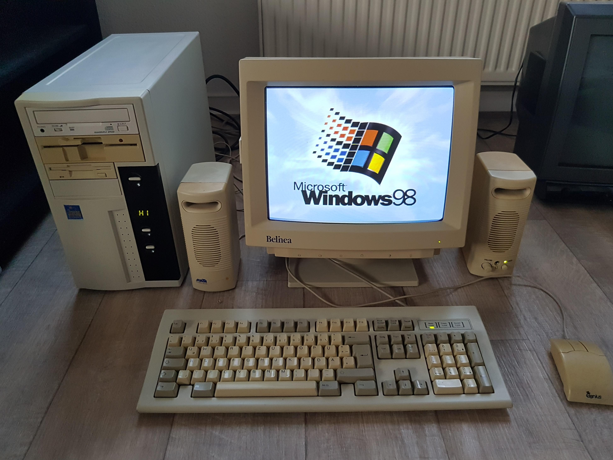

Windows XP



Windows XP is a major release of Microsoft's Windows NT operating system. It was released to manufacturing on August 24, 2001, and later to retail on October 25, 2001. It is a direct successor to Windows 2000 for high-end and business users and Windows Me for home users.